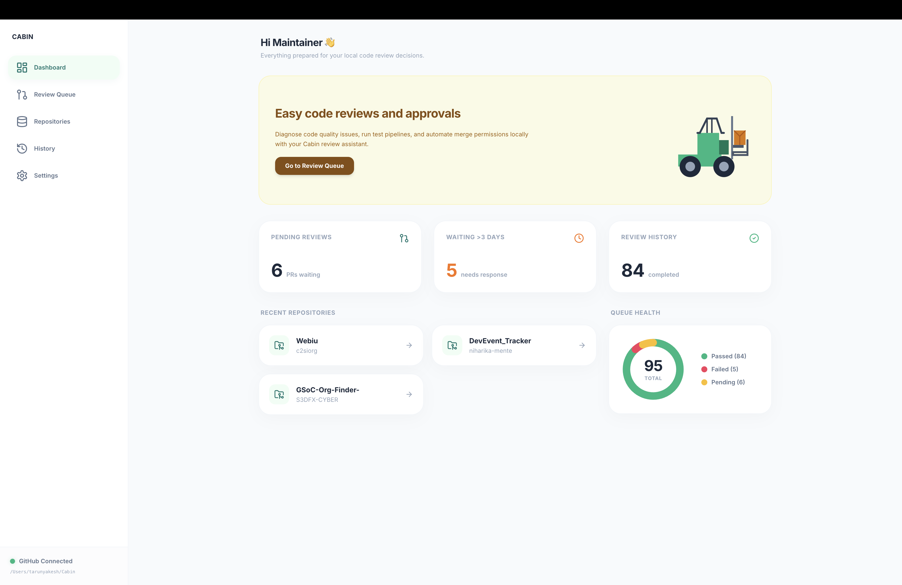

Cabin brings the full power of AI-assisted code review to your desktop. CI status, DCO checks, PR context, merge conflicts — all analyzed locally, all in one place.

Cabin consolidates your entire PR review workflow into one intelligent desktop app. No tabs, no context switching, no guesswork.
Every PR runs through GitHub metadata, git diff, CI status, merge conflict detection, DCO verification, discussion analysis, and repository context — all sequentially and locally.
Plug in any AI CLI tool. Cabin spawns it with full PR context, streams live output, and parses structured review results — no data leaves your machine.
Automatically validates Developer Certificate of Origin across all commits. Surfaces unresolved discussions, change requests, and open questions.
Aggregates all check runs and combined statuses from GitHub Actions, CircleCI, and any other CI provider into a single clear signal per PR.
Add all your repositories once. Cabin syncs assigned PRs every 30 minutes via GitHub API and surfaces what needs your attention across all projects.
Every decision you make — approved, changes requested, commented — is stored locally in SQLite with the full AI summary, worker logs, and discussion analysis. Searchable, auditable, yours.
Add your GitHub token and repository paths. Cabin starts syncing your assigned pull requests immediately — no configuration file needed.
Click Review. The 7-stage pipeline runs locally: git clone, CI status check, DCO scan, merge conflict detection, discussion parsing — all in under 60 seconds.
Your local AI CLI runs with full context and generates a structured review — security risks, code quality issues, performance notes — streamed live to your screen.
Approve, request changes, or comment — directly from Cabin. Your decision is posted to GitHub and stored locally with the full AI summary for future reference.
Every screen designed to surface signal, not noise.
Download Cabin for your platform and start reviewing smarter today. No account, no subscription, no cloud dependency.
Apple Silicon & Intel
v1.0.0 · Universal BinaryWindows 10 / 11 · x64
v1.0.0 · NSIS InstallerAppImage · deb · rpm
v1.0.0 · Multiple formatsgit clone https://github.com/TarunyaProgrammer/Cabin-MaintainerOS && npm install && npm run build:all
Cabin is MIT-licensed and 100% open source. Built by maintainers, for maintainers. Contributions, issues, and PRs are always welcome.